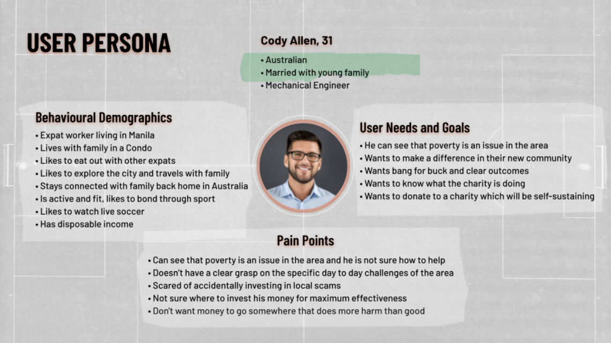
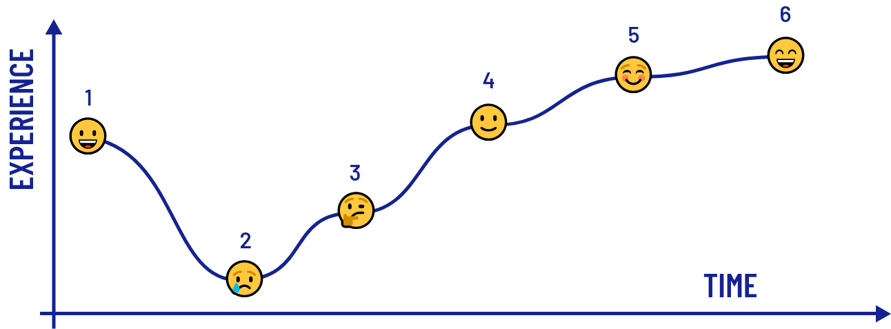
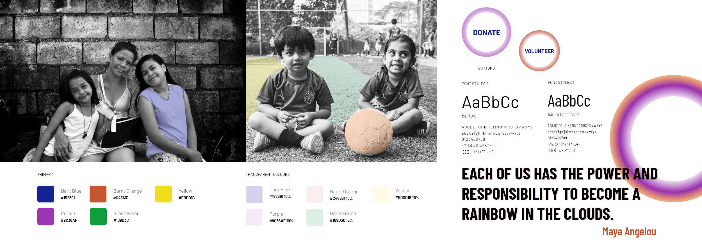
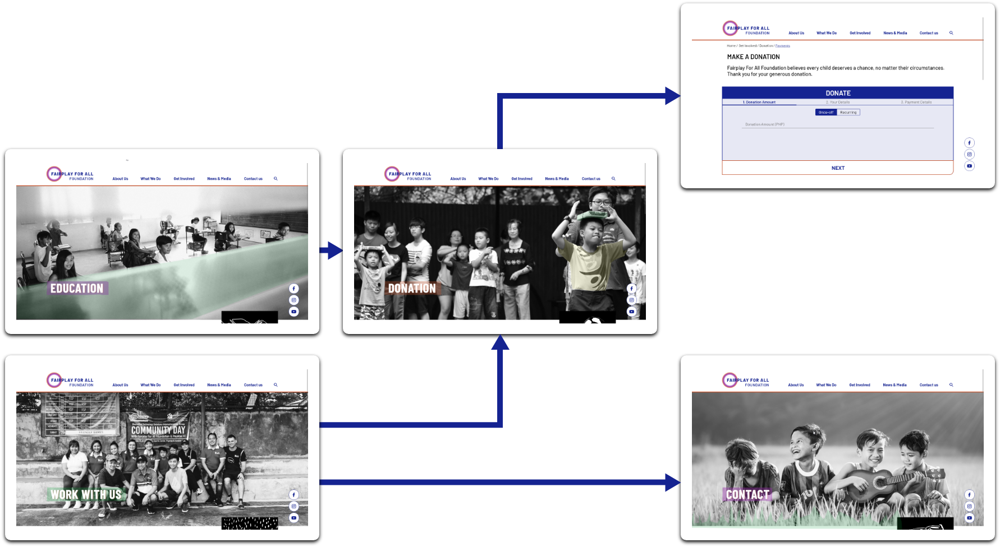
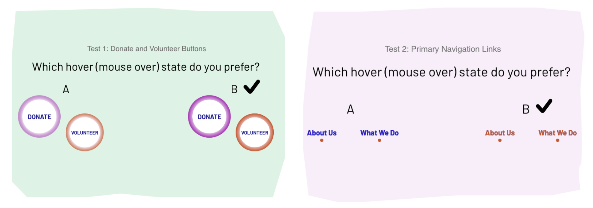

The goal of the his project was to redesign the Fair Play for All (FPFA) website.
Our user research showed that the website failed to sell the good work that FPFA did in the Philippines. The redesign process focused around making the content clearer and creating an emotional connection with the user.
Through the design process, we were able to create a new website with a distinct visual style which clearly conveyed what FPFA was all about.
About the Fairplay For All Foundation
The Fairplay For All Foundation is located in Payatas, Manila, in the Philippines. The Philippines is a third world developing nation in South-East Asia, and the Payatas is a dumpsite and a landfill area within the captial city of Manilla, where poverty is entrenched and there are few opportunities to break out of that cycle.
Fairplay looks to end the poverty cycle sustainably through 3 pillars; education, sports and the Fairplay Cafe.
Education. They provide education and proper nutritionto malnourished kids in the region.
Sports. Soccer is used as a vehicle to foster school retention, cooperation and teamwork amongst the children of the region.
Fairplay Cafe. Through the Cafe they provide free meals to the children as well as employing some of their mothers, so that parents don’t have to scavenge around the landfill for food.
User Research
As a team, we hit the ground running with many different user research techniques and assessments of the current site.
Our most interesting insights came from usability testing and survey results.
The usability testing confirmed what we suspected about the existing website - that it failed to convey the core of what the charity was about.
The surveys brought us some interesting insights about what people who donate to surveys value, which drove our problem statement.
Usability Testing Key Findings
The objective of our usability tests of the existing website was to identify pain points that users experience during interactions with the site.
Users expected a donate button on the homepage
Social Media links need to be in the footer
Joining the mailing list was near impossible
Search results are listed in no obvious order
The Homepage does not make it clear what the Charity does
Survey Results
THEME 1
57%
of people had never donated to overseas charities before.
THEME 2
74%
of people who have donated need to connect emotionally or via shared values before donating to a charity
THEME 3
60%
of people who don't donate to overseas charities do so because of a lack of trust.
Problem Definition
With our initial research phase done, we took the quantative and qualitative data from our research and build a problem statement and user insight statement.
Problem Statement
Fairplay Foundation is a non-profit organisation designed to give children and families in Payatas in the Philippines a better chance to succeed in life and break the cycle of poverty for good. Our donors prefer to donate to local charities and feel a strong need to see where their time and money is going. Without their total trust, we risk losing their support. How might we increase trust, emotional connection and transparency to increase the number of people who donate and participate with the Fairplay Foundation.
User Insight Statement
“I need to establish an emotional connection and to know that my money is going to the right place because trust is the most important value to me when it comes to selecting charity.”

User Journey

As part of our problem definition phase, we mapped the journey we wanted a user to take when using this website, as they build confidence and trust in the Fairplay For All brand.
Cody, our user, just moved to the Philippines to start his new job.
When Cody settled in, he noticed that there was a lot of severe poverty in his new community. It was quite distressing.
But then, Cody found out about the FairPlay for All Foundation through his soccer mates. He takes a look through the website and he likes what he sees.
Cody navigates to the donate page of the website and donates money to FairPlay for All.
Cody feels satisfied, because he just donated to a charity he trusts to make a difference.
Cody tells his friends back home in Australia about this awesome charity he is supporting & the great work they do.
Design
Style Guide
The inspiration for our design was sparked by the black and white photography from the foundation's Payata’s Paper newsletter. This documentary style photography holds a certain truth and captures the raw honesty of living below the poverty line in Manila. We utilised this photographic style as one of the core elements for establishing transparency, trust and emotional connection with the user.

Creating an Emotional Connection
Video is an important element we wanted to include in our prototype, however xd does not support this file type. Moving images have the ability to very quickly transport a viewer to a different place, to understand and empathise with what they are watching and form a faster emotional connection. To demonstrate our vision for video as part of the design, we asked someone experienced with Adobe After Effects to build this demo for us, to demonstrate this.
Responsive Design
One of the key requirements for this project was that the website should be responsive. We designed with both the mobile and desktop viewports in mind, and one of my tasks was to demonstrate how the site would respond to changes in the viewport size. I put together this demo in Xd to demonstrate the responsive design.
Design Evolution
From wireframes to our final design, the site went through many iterations, as we took on board instructor feedback, team reviews and feedback from many iterations of user testing.
Prototype
Working in Xd, we bought our designs to life with clickable prototypes at all stages of the design process. From a clickable wireframe prototype, to the final high fidelity design, we always had clickable prototypes ready to feed into our testing.

User Testing
At every stage of the process, our team was conducting user testing. Rather that provide an exhaustive list of the testing we did, here are a few specific examples of tests that we ran with users.
Component Testing
Early in the design phase, we had concerns that some of the hover states of user interface elements (our CTA buttons and main navigation links) were too subtle and it would not be easily distinguished as navigation components, and would disappear into the design. We developed a set of interactive component tests in Adobe Xd which allowed us to compare design options and to see which hover states were more distinctive for users, and which elements caught users attention first. Based on the outcome of that testing, we adjusted our design to make our CTA and primary nav hover states clearer.

High Fidelity User Testing
We did a series of high fidelity user tests on both mobile and desktop to test whether or product met the overall aims of the project.
What element on the homepage stuck out the most?
Could the user identify quickly what the charity is about?
Could the user quickly find the contact form?
Could the user quickly get to the donate page?
Could the user find out more about what FPFA were doing to educate kids in their region?
This final round of testing confirmed that our product design was on the right track. People were immediately drawn either to the donate button or the imagery. There were very few missed clicks and the time on task for each scenario based test was very short.
Final Thoughts
With more time, there are a few things we would like to revisit - in particular the bottom navigation was confusing and needed rework and simplification.
However, at the close of this three week project, we as a team, felt that we brought together a solution which solved the problem we were presented with.
We created a website with simple, clean navigation which built up trust and an emotional connection with the users, to increase exposure and donations to the Fairplay for All charity.